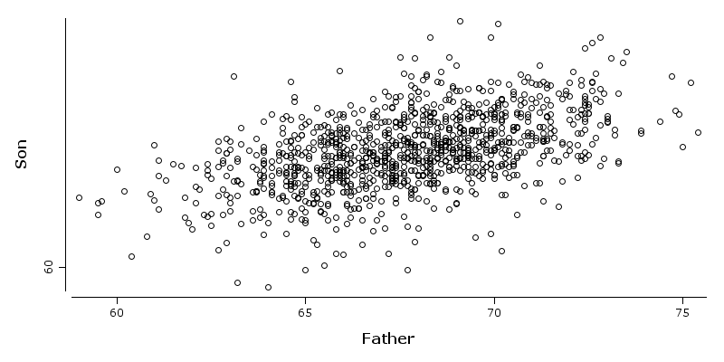

2. Data sets
%load ../rapaio-bootstrap
2. Data sets
For the purpose of this book some built-in data sets are used. Most of the built in data sets are available via
rapaio.datasets.Datasets class. This is an utility class which provides some standard data sets used in
many statistical and machine learning text books. There are a few which we will use for the purpose of this
tutorial.
2.1 Iris data set
The Iris flower data set or Fisher's Iris data set is a multivariate data set introduced by Ronald Fisher in his 1936 paper The use of multiple measurements in taxonomic problems as an example of linear discriminant analysis. It is sometimes called Anderson's Iris data set because Edgar Anderson collected the data to quantify the morphological variation of Iris flowers of three related species.
Two of the three species were collected in the Gaspé Peninsula all from the same pasture, and picked on the same day and measured at the same time by the same person with the same apparatus.
The data set consists of 50 samples from each of three species of Iris (Iris setosa, Iris virginica and Iris versicolor). There are for measures for each sample: the length and the width of the sepals and petals, in centimeters. Based on the combination of these four features, Fisher developed a linear discriminant model to distinguish the species from each other.
Frame iris = Datasets.loadIrisDataset();
iris.printSummary();
Frame Summary
=============
* rowCount: 150
* complete: 150/150
* varCount: 5
* varNames:
0. sepal-length : dbl | 3. petal-width : dbl |
1. sepal-width : dbl | 4. class : nom |
2. petal-length : dbl |
* summary:
sepal-length [dbl] sepal-width [dbl] petal-length [dbl] petal-width [dbl] class
Min. : 4.3000000 Min. : 2.0000000 Min. : 1.0000000 Min. : 0.1000000 versicolor :
1st Qu. : 5.1000000 1st Qu. : 2.8000000 1st Qu. : 1.6000000 1st Qu. : 0.3000000 setosa :
Median : 5.8000000 Median : 3.0000000 Median : 4.3500000 Median : 1.3000000 virginica :
Mean : 5.8433333 Mean : 3.0573333 Mean : 3.7580000 Mean : 1.1993333
2nd Qu. : 6.4000000 2nd Qu. : 3.3000000 2nd Qu. : 5.1000000 2nd Qu. : 1.8000000
Max. : 7.9000000 Max. : 4.4000000 Max. : 6.9000000 Max. : 2.5000000
[nom]
50
50
50
2.2 Pearson's Height Data
This simple data set comes from a famous experiment by Karl Pearson around 1903. The number of cases is 1078. The original data values were rounded to produce heights to the nearest \(0.1\) inch.
Frame df = Datasets.loadPearsonHeightDataset();
df.printSummary();
Frame Summary
=============
* rowCount: 1078
* complete: 1078/1078
* varCount: 2
* varNames:
0. Father : dbl |
1. Son : dbl |
* summary:
Father [dbl] Son [dbl] Mean : 67.6868275 Mean : 68.6842301
Min. : 59.0000000 Min. : 58.5000000 2nd Qu. : 69.6000000 2nd Qu. : 70.5000000
1st Qu. : 65.8000000 1st Qu. : 66.9000000 Max. : 75.4000000 Max. : 78.4000000
Median : 67.8000000 Median : 68.6000000
WS.image(points(df.rvar("Father"), df.rvar("Son")));
